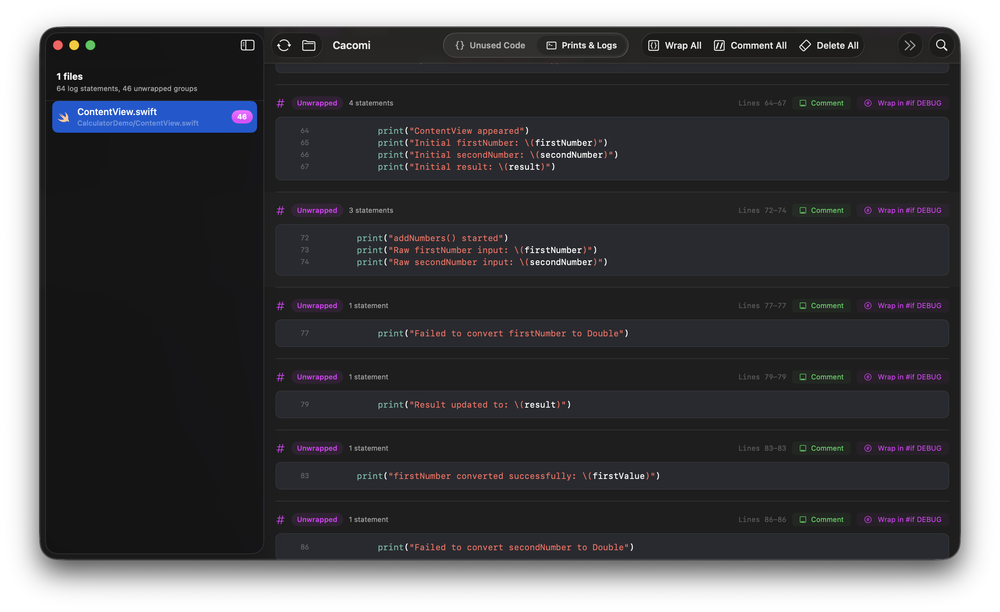
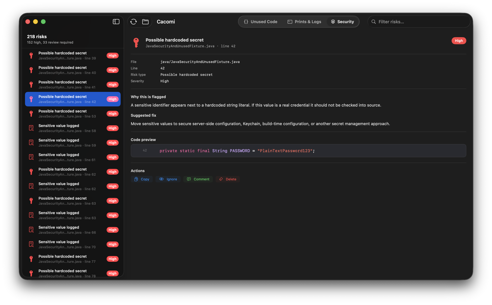
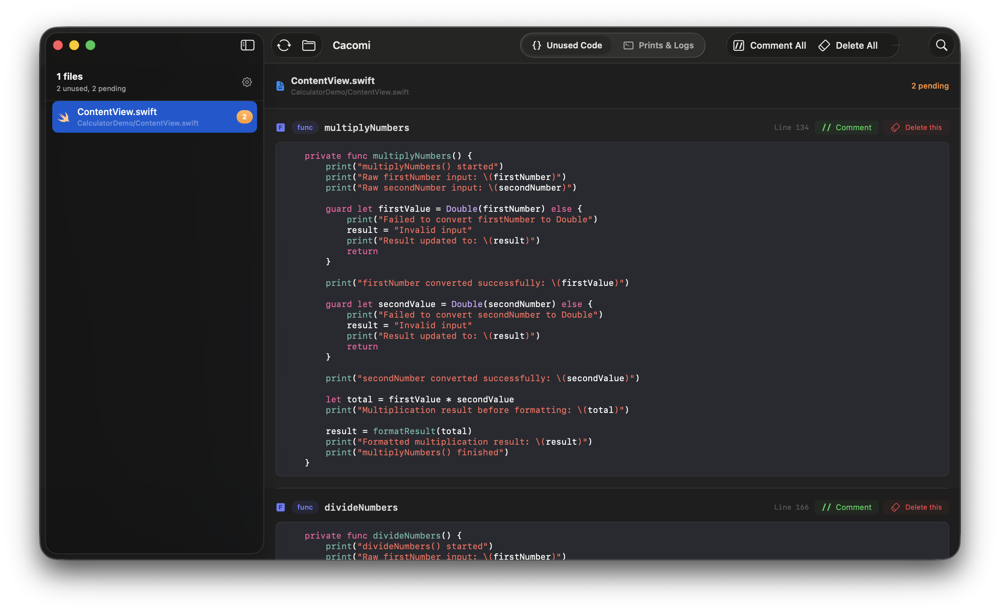
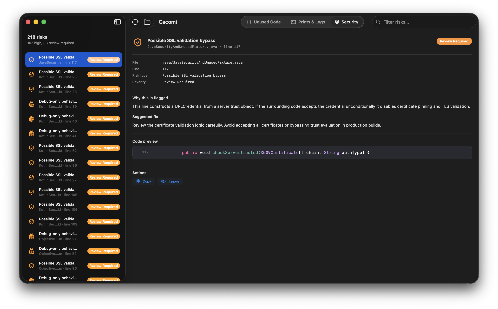

Hardcoded credentials
Catch API keys, passwords and tokens committed to source.
let password = "12345"
Cacomi scans your project and finds unused methods, noisy debug logs and security risks across Swift, SwiftUI, Objective-C, Python, Kotlin, JavaScript, C/C++ and more.


Reference-traced static analysis flags functions, methods and properties nothing else touches — across your whole codebase, not just one file.

Every print,
debugPrint and
NSLog
in your project — grouped per file, previewed and ready to wrap in
#if DEBUG.
Cacomi now performs static analysis to surface common security issues — hardcoded credentials, weak crypto, certificate validation bypasses and more — grouped per file with a code preview and a recommended fix.
Catch API keys, passwords and tokens committed to source.
let password = "12345"
Flag URLSession delegates that accept any server trust.
didReceive challenge → .useCredential
Spot uses of MD5, SHA-1 and other deprecated algorithms.
CC_MD5(data, len, &digest)
Surface print statements that look like they log secrets or PII.
print("Token: \(token)")

Cacomi reads the source you actually ship — Apple-platform projects and the rest of your stack alike.
A clear path from a noisy codebase to a release-ready build — with undo on every step.
Cacomi reads every file in seconds — locally, on your Mac, with nothing sent off the machine.
Unused code, debug logs and security findings are grouped with a code preview, so triage is fast.
Comment, delete, or wrap in #if DEBUG — every action is reversible.
Fewer dead paths. Fewer noisy logs. Fewer secrets shipping by accident.
Download Cacomi for macOS and run your first scan in under a minute.
Download for MacmacOS 13 Ventura or later · Universal binary · Local & private